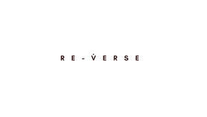
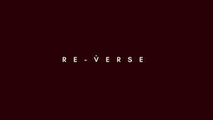

Trade Mark Journal No.2025/031 1 August 2025
UK00004238109 23 July 2025 (3,5,10,41,42,44)
Mark 1
Mark 2

Mark 3

- Class 3
- Skin hydrators being injectable dermal fillers; Cosmetic stamps, filled; Anti-ageing moisturiser; Anti-ageing creams; Anti-ageing serum; Anti-ageing creams [for cosmetic use]; Beauty serums with anti-ageing properties; Anti-aging creams; Anti-aging moisturizers; Anti-aging cream; Anti-aging creams [for cosmetic use]; Anti-aging skincare preparations; Anti-ageing serums for cosmetic purposes; Anti-wrinkle creams; Anti-aging moisturizers used as cosmetics; Anti-wrinkle creams [for cosmetic use]; Anti-wrinkle cream [for cosmetic use]; Anti-wrinkle cream; Anti-aging serum for cosmetic use; Moisturising skin creams [cosmetic]; Moisturising creams; Cosmetic moisturisers; Cosmetic nourishing creams; Moisturising skin lotions [cosmetic]; Skincare cosmetics; Facial moisturisers [cosmetic]; Moisturisers [cosmetics]; Creams for firming the skin; After-sun creams; Moisturizing creams; Moisturiser; Moisturisers; Beauty serums; Exfoliating creams; Skin moisturiser; Skin moisturisers; Skin creams [cosmetic]; Skin creams [for cosmetic use]; Cosmetic creams for the skin; Skin hydrators; After-sun lotions [for cosmetic use]; Moisturising body lotion [cosmetic]; Skin moisturizers used as cosmetics; Moisturising concentrates [cosmetic]; Sunscreen creams [for cosmetic use]; Moisturising gels [cosmetic]; Hydrating creams for cosmetic use; Skin whitening creams; Creams (Skin whitening -); Toning creams [cosmetic]; Exfoliant creams; Suncare lotions [for cosmetic use]; After-sun oils [cosmetics]; Cleansing creams [cosmetic]; Aftershave moisturising cream; Facial creams [cosmetics]; Skin recovery creams [cosmetics]; Cosmetic preparations for skin firming; Skin cream [for cosmetic use]; Skin care creams [cosmetic]; Cosmetic creams for skin care; Retinol cream for cosmetic purposes; Facial creams [cosmetic]; Facial creams [for cosmetic use]; Cosmetic massage creams; Creams (Cosmetic -); Cosmetic creams; Skin hydrators for cosmetic purposes; Cream for whitening the skin; Whitening the skin (Cream for -); Wrinkle resistant creams [for cosmetic use]; Suntan creams [self-tanning creams]; Sun creams [for cosmetic use]; After-sun milk [cosmetics]; Beauty creams; Cosmetic creams for firming skin around eyes; Body firming creams; Non-medicated skin serums; Skin creams; Creams for the skin; Skin moisturizers; Skin moisturizer; Aromatherapy creams; Creams for tanning the skin; After-sun milks [cosmetics]; Acne cleansers, cosmetic; Body and facial creams [cosmetics]; Beauty balm creams; Cosmetic creams and lotions; Skin relief serum [cosmetic]; Cosmetic skin enhancers; After-sun lotions; Sun protecting creams [cosmetics]; Skin balms [cosmetic]; Moisturising creams, lotions and gels; Facial cream [for cosmetic use]; Skin toners [cosmetic]; Skincare preparations; Dermatological creams [other than medicated]; Skin cleansers [cosmetic]; Cosmetics for use in the treatment of wrinkled skin; Self tanning creams [cosmetic]; Body creams [cosmetics]; Skin whitening preparations [cosmetic]; Exfoliants for the cleansing of the skin; Moisturizing preparations for the skin; Skin care lotions [cosmetic]; Skin cleansing cream; Facial moisturizers; Facial creams; Skin conditioning creams for cosmetic purposes; Pro-collagen for cosmetic purposes; Hair care creams [for cosmetic use]; Mattifying gel cream; Sunscreens [for cosmetic use]; Sunscreen creams; Skin emollients; Sunscreen [for cosmetic use]; Cosmetics in the form of creams; Creams for cellulite reduction; Exfoliants for the care of the skin; Suncare lotions; Cosmetic facial lotions; Facial lotions [cosmetic]; Oils for moisturising the skin after sunbathing; Cosmetic sun-protecting preparations; Moisturizers; Cosmetic products in the form of aerosols for skincare; Cosmetic creams for dry skin; Cleansing creams; Hair moisturisers; Skin lightening creams; Sun-tanning creams.
- Class 5
- Injectable dermal filler; Injectable dermal fillers; Bone void fillers consisting of natural materials; Bone fillers consisting of living materials; Bone void fillers comprised of living tissues; Teeth filling material; Supplementary fodder mixes; Moisturising creams [pharmaceutical]; Medicinal creams for the protection of the skin; Anti-oxidant supplements; Serums; Medicinal creams for skin care; Moisturising body lotion [pharmaceutical]; Antioxidants; Antioxidant pills; Acne creams [pharmaceutical preparations]; Niacinamide preparations for the treatment of acne; Therapeutic creams [medical]; Acne cream [pharmaceutical preparations]; Pharmaceutical skin lotions; Creams for dermatological use; Moleskin for use as a medical bandage; Mole skin for use as a medical bandage; Allergy medication; Dressings, medical; Medical dressings; Medicine; Medical plasters; Reactants for medical diagnosis; Eye bandages for medical use; Medical and surgical dressings; Medical mouthwashes; Indicators for medical diagnosis; Allergy medications; Allergy relief medication; Acne medication; Medical infusions; Antifungal medication; Yeast for medical, veterinary or pharmaceutical purposes; Homeopathic medicines; Eye ointment for medical use; Medical wound dressings.
- Class 10
- Bone void fillers consisting of artificial materials; Bone void fillers comprised of artificial materials; Medical patient treatment chairs; Medical stethoscopes; Medical inhalers; Medical examination gloves; Medical dosage dispensers for medical use; Patient examination gowns; Scanners for medical diagnosis; Medical syringes; Medical scissors; Gloves for medical examinations; Hospital examination chairs; Medical stretchers; Medical braces; Humidifiers for use in medical treatment; Medical gloves; Instrument cases for use by surgeons and doctors; Patient stretchers; Medical syringe needles; Medical hosiery; Medical ultrasound apparatus; Medical procedure chairs; Medical implants; Medical knee braces; Medical endoscopes; Cases fitted for use by surgeons and doctors; Mattresses for hospital patient trolleys; Medical tubing for transfusions; Medical aids for use in stoma care; Stirrups for use with medical examination tables; Medical tubing; Examination gloves for medical use; Medical skin abraders; Medical X-ray apparatus; Medical elbow braces; Bariatric patient stretchers; Medical ankle braces; X-ray appliances for dental and medical use; Medical and surgical laparoscopes; Medical ventilators; Medical apparatus for use in cardiac surgery; Prostheses for medical treatment; Medical tubing for administering drugs; Medical stents; Medical gowns; Apparatus for blood tests [for medical use]; Medical lasers; Inhalers for medical use; Medical examination lamps; Medical catheters; Medical apparatus for use in laparoscopy; Medical vessel dilators; Gynecological medical instruments for examining women' s reproductive organs; Medical electrodes; Hospital gurneys; Medical examination tables; Apparatus for physical training for medical use.
- Class 41
- Education and training; Medical training and teaching; Training and education services; Education and training services; Vocational education and training services; Medical education services; Education, teaching and training; Computer education training; Education and training consultancy; Linguistic education and training services; Provision of training and education; Provision of education and training; Education and training services in the field of occupational health and safety; Computer education training services; Education services relating to vocational training; Education and training in the field of occupational health and safety; Training or education services in the field of life coaching; Educational and training services; Educational and training services relating to healthcare; Providing continuing medical education courses; Career counselling [training and education advice]; Career counselling relating to education and training; Education; Guidance (Vocational -) [education or training advice]; Vocational guidance [education or training advice]; Vocational training; Career advisory services (education or training advice); Vocational training services; Education services relating to the training of personnel in food technology; Education and training in the field of business management; Education and training in the field of automotive engineering; Vocational education; Training services for medical visitors; Education services relating to business training; Health education; Academy services (Education -); Education academy services; Academy education services; Teacher training services; Education and training in the field of music and entertainment; Providing of training in the field of health care and nutrition; Advice relating to medical training; Engineering training college services; Training services relating to orthopaedic medicine; Training services in the field of medical disorders and their treatment; Educational certification services, namely, providing training and educational examination; Career and vocational training; Consultancy services relating to the education and training of management and of personnel; Educational and training services relating to sport; Career counseling [education]; Courses (Training -) relating to medicine; Educational and training programs in the field of risk management; Health and wellness training; Vocational training courses (Provision of -); Education and instruction services; Physical fitness education services; Educational services for providing courses of education; Education services relating to the veterinary profession; Physical education services; Education and training services in relation to business management; Training services for nurses; Physical health education; Training services relating to occupational health; Engineering training services; Training; Teaching of diet education; Education academy services for teaching construction drafting; Education services; Provision of medical instruction courses; Employment training; Physical education instruction; Health and fitness training; University education services; Providing continuing dental education courses; Training services; Vocational skills training; Education academy services for teaching art history; Training in the field of medicine; Education in the field of occupational health and safety; Physical education; Conducting educational support programmes for healthcare professionals; Physical training services; Teaching services relating to the medical field; Medical tuition services; Education academy services for teaching languages; Education academy services for teaching acting; Postgraduate training courses relating to engineering technology; Education services relating to medicine; Adult education services relating to medicine; Fitness training services; Vocational education in the field of mechanics; Education and instruction; Vocational skills training (Provision of -); Provision of training courses in personal development; Education examination; Vocational education relating to home safety; Career information and advisory services (educational and training advice); Instructional and training services; Providing training and educational examination for certification purposes; Training services relating to health and safety; Providing of training, teaching and tuition; Education and training in the field of electronic data processing; Entertainment, education and instruction services; Legal education services; Training of financial personnel; Providing continuing nursing education courses.
- Class 42
- Medical research; Medical laboratories.
- Class 44
- Injectable filler treatments for cosmetic purposes; Laser skin rejuvenation services; Cosmetic laser treatment of skin; Physician services; Medical consultation; Medical examination; Medical and healthcare clinics; Medical clinic day care services for sick children; Clinics (Medical -); Medical clinic services; Clinic (Medical -) services; Clinic services (Medical -); Medical consultations; Health clinic services [medical]; Medical advice in the field of pregnancy; Medical services for treatment of the skin.
Elite Plus Marketing Management LLC
Representative: MOHAMMED SEFAHN CHAUDHRY